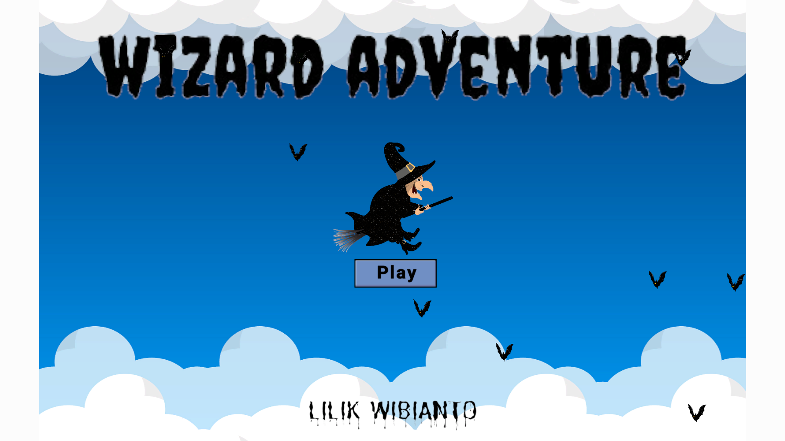
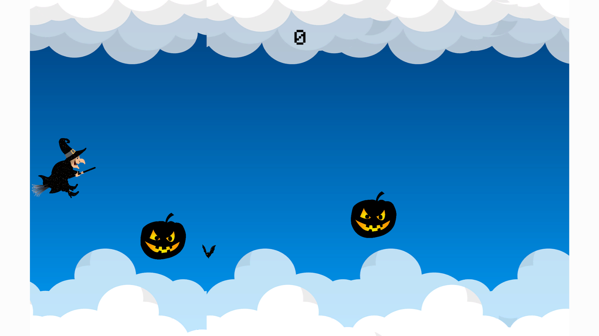
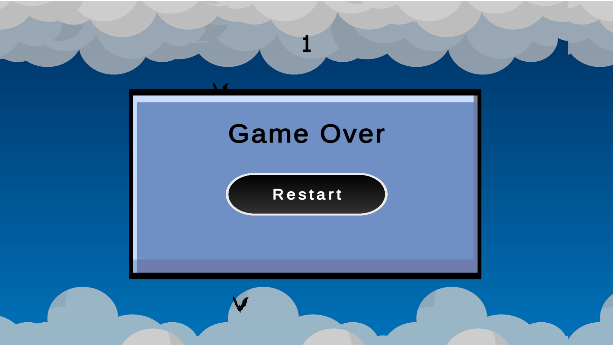

Game endless runner berbasis Unity dengan sistem obstacle, scoring, audio, dan looping background.
Pemrograman Game
Game 2D Wizard Adventure merupakan game sederhana yang dikembangkan menggunakan Unity dengan konsep endless runner. Pemain mengendalikan karakter penyihir yang bergerak untuk menghindari rintangan yang muncul secara acak. Game ini dilengkapi dengan sistem skor, efek suara dan musik latar, serta tampilan game over ketika pemain bertabrakan dengan obstacle. Selain itu, game juga menerapkan mekanisme looping background agar memberikan kesan pergerakan yang dinamis.


